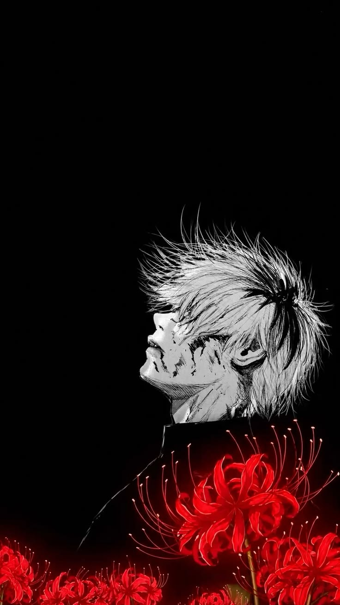

Ken Kaneki

"O que está errado não sou eu... o que está errado é este mundo."
Ken Kaneki era um estudante universitário comum até um encontro fatídico com um Ghoul mudar a sua vida para sempre. Agora, ele precisa de sobreviver no mundo sombrio das criaturas que se alimentam de carne humana.